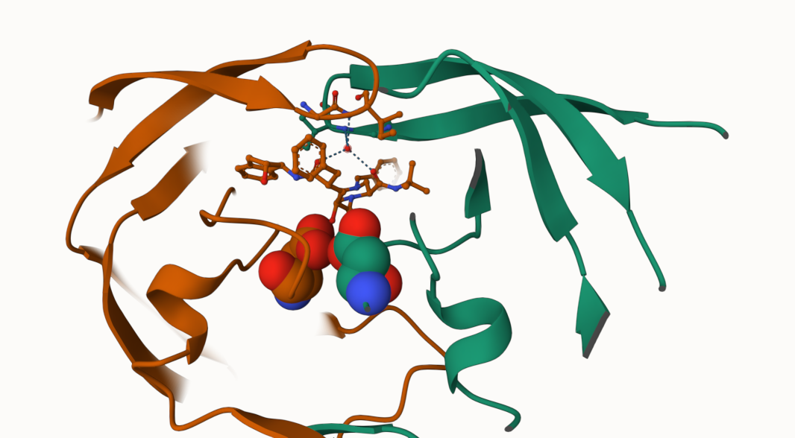

pdb <- read.csv('Data_Export_Summary.csv')Class 09: Structural Bioinformatics
Section 1 - Intro to RCSB Protein Data Bank (PDB)
Q1: What percentage of structures in the PDB are solved by X-Ray and Electron Microscopy.
92.99% of structures in the PDB are solved by X-Ray and Electron Microscopy with each making up approximate 86 and 7% respectively.
#xray <- sum(154766, 9083, 8110, 2664, 163, 11)
#em <- sum(10155, 1802, 3176, 94, 9 ,0 )
#total <- sum(177403, 10925, 11575, 4223, 204, 22)
#(xray + em )/ total
xtot <- sum(as.numeric(gsub(',', '' , pdb$X.ray)))
etot <- sum(as.numeric(gsub(',','',pdb$EM)))
ttot <- sum(as.numeric(gsub(',','', pdb$Total)))
(xtot + etot)/ttot[1] 0.9299297Make this a function
tot <- function(z) {
#Take inuput z and remove commas
#then make it numeric and then take the sum
#Save the sum as y
y <- sum(as.numeric(gsub(',', '', z)))
#return output
return(y)
}
Q1 <- 100* (tot(pdb$X.ray) + tot(pdb$EM)) / tot(pdb$Total)
xprop <- round(tot(pdb$X.ray) / tot(pdb$Total), 2)
eprop <- round(tot(pdb$EM) / tot(pdb$Total), 2)Q2: What proportion of structures in the PDB are protein?
86.81% of structures in the PDB are protein (only).
rmcomma <- function(input){
input <- as.numeric(gsub(',','', input))
}
pdb$Total <- as.numeric(gsub(',', '',pdb$Total))
prot <- sum(pdb$Total[1])
prot/sum(pdb$Total)[1] 0.8681246Q3: Type HIV in the PDB website search box on the home page and determine how many HIV-1 protease structures are in the current PDB?
There are 239 HIV-1 protease structures in the current PDB.
Part 2 - Visualizing the HIV-1 protease structure

Q4: Water molecules normally have 3 atoms. Why do we see just one atom per water molecule in this structure?
The hydrogen molecules are extremely small and are not rendered due to the low resolution representation,
Q5: There is a critical “conserved” water molecule in the binding site. Can you identify this water molecule? What residue number does this water molecule have
The molecule is HOH 308.
Part 3 - Introduction to Bio3D in R
Working with Structures in R
We can use the bio3d package to read and perform bioinformativcs calculations on PDB structures
library(bio3d)
hsg <- read.pdb("1hsg") Note: Accessing on-line PDB filehsg
Call: read.pdb(file = "1hsg")
Total Models#: 1
Total Atoms#: 1686, XYZs#: 5058 Chains#: 2 (values: A B)
Protein Atoms#: 1514 (residues/Calpha atoms#: 198)
Nucleic acid Atoms#: 0 (residues/phosphate atoms#: 0)
Non-protein/nucleic Atoms#: 172 (residues: 128)
Non-protein/nucleic resid values: [ HOH (127), MK1 (1) ]
Protein sequence:
PQITLWQRPLVTIKIGGQLKEALLDTGADDTVLEEMSLPGRWKPKMIGGIGGFIKVRQYD
QILIEICGHKAIGTVLVGPTPVNIIGRNLLTQIGCTLNFPQITLWQRPLVTIKIGGQLKE
ALLDTGADDTVLEEMSLPGRWKPKMIGGIGGFIKVRQYDQILIEICGHKAIGTVLVGPTP
VNIIGRNLLTQIGCTLNF
+ attr: atom, xyz, seqres, helix, sheet,
calpha, remark, callattributes(hsg)$names
[1] "atom" "xyz" "seqres" "helix" "sheet" "calpha" "remark" "call"
$class
[1] "pdb" "sse"head(hsg$atom) type eleno elety alt resid chain resno insert x y z o b
1 ATOM 1 N <NA> PRO A 1 <NA> 29.361 39.686 5.862 1 38.10
2 ATOM 2 CA <NA> PRO A 1 <NA> 30.307 38.663 5.319 1 40.62
3 ATOM 3 C <NA> PRO A 1 <NA> 29.760 38.071 4.022 1 42.64
4 ATOM 4 O <NA> PRO A 1 <NA> 28.600 38.302 3.676 1 43.40
5 ATOM 5 CB <NA> PRO A 1 <NA> 30.508 37.541 6.342 1 37.87
6 ATOM 6 CG <NA> PRO A 1 <NA> 29.296 37.591 7.162 1 38.40
segid elesy charge
1 <NA> N <NA>
2 <NA> C <NA>
3 <NA> C <NA>
4 <NA> O <NA>
5 <NA> C <NA>
6 <NA> C <NA>Part 4 - Comparative structure analysis of Adenylate Kinase
adk <- read.pdb('6s36') Note: Accessing on-line PDB file
PDB has ALT records, taking A only, rm.alt=TRUEPerform a prediction of flexibility with a technique called NMA (normal mode analysis)
#perform a flexibility prediction
m <- nma(adk) Building Hessian... Done in 0.03 seconds.
Diagonalizing Hessian... Done in 0.34 seconds.plot(m)
Write out a ‘movie’ (a.k.a trajectory) of the motion for viewing in MOlstar
mktrj(m, file="adk_m7.pdb")Q7: How many amino acid residues are there in this pdb object?
198
Q8: Name one of the two non-protein residues?
HOH
Q9: How many protein chains are in this structure?
2 protein chains